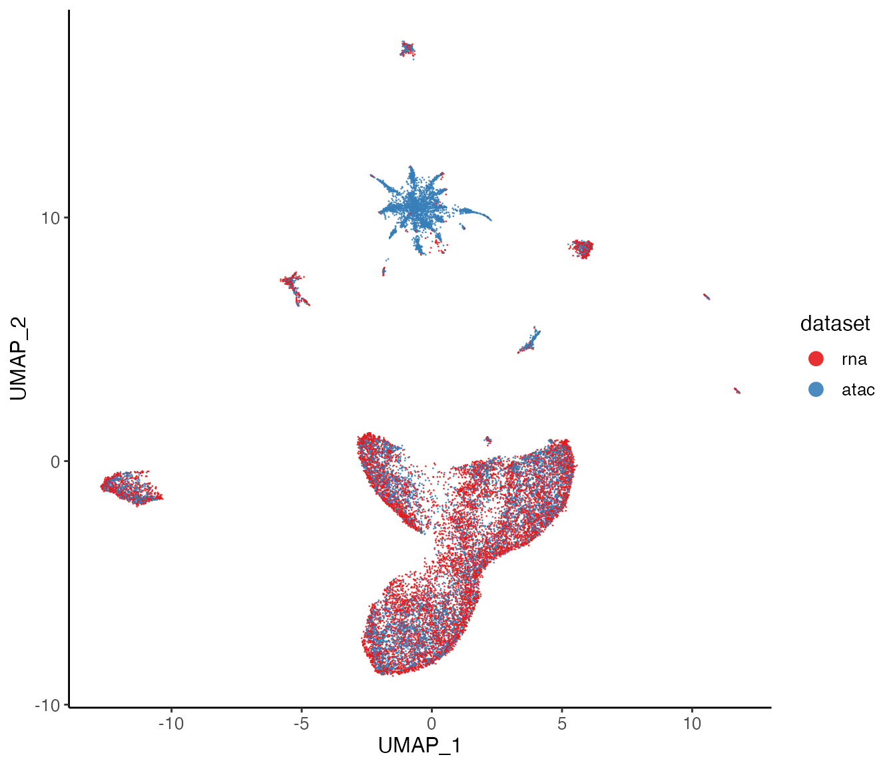

UINMF integration of Dual-omics data
April Kriebel and Joshua Welch
04/25/2023
Source:vignettes/articles/SNAREseq_walkthrough.Rmd
SNAREseq_walkthrough.RmdHere we integrate the scATAC and scRNA reads from the dual-omics dataset SNARE-seq as an illustration of how UINMF can be used to integrate cross-modality data. For this tutorial, we will use three matrices, which can all be downloaded from our Dropbox folder
- The transcriptomic measures
SNAREseq_RNA.RDSis the SNARE-seq scRNA dataset (31,367 genes by 10,309 cells). - For the shared epigenomic features
SNARE_seq_shared_chromatin_features.RDS, we create a gene-centric matrix, such that we sum of the number of accessibiltiy peaks that occur over the gene body and promoter regions for each gene. For a detailed walkthough of how to generate such a matrix, please see our Integrating scRNA and scATAC data vignette. The resulting matrix of gene-centric chromatin accessibility is 22,379 genes by 10,309 cells - For the unshared epigenomic features, we binned the genome into bins
of 100,000 bp, and summed the number of peaks occuring in each bin. We
then filtered this matrix for all bins that overlapped with ENCODE
Blacklist regions, genes, and promoters. Our filtered matrix
SNARE_seq_unshared_chromatin_features.RDSis 10,309 cells by 7,437 bins.
Step 2: Preprocessing
Integrative non-negative matrix factorization with unshared features (UINMF) performs factorization using shared feature matrix of all datasets and includes unshared features from dataset(s) with such information. In this tutorial, we plan to use the variable feature selected from the scRNA dataset. Since we prepared the gene-centric matrix from the scATAC dataset, these genes can be accounted as the shared features. For the unshared features, normally we select variable genes that are out of the intersection of gene sets from all datasets. In this tutorial, we directly use the peaks that are identified variable. Therefore, special processing will be needed compared to the other UINMF tutorials.
2.1: Create liger object for shared genes
lig <- createLiger(list(rna = rna, atac = atac_shared))2.2: Normalize and select shared variable features
lig <- normalize(lig) %>%
selectGenes(useDatasets = "rna", thresh = 0.1) %>%
scaleNotCenter()Step 3: Selecting the unshared features
When selecting unshared features for the UINMF integration, it is critical to consider the type of data you are working with. For unshared features that gene-centric, the user should follow the feature selection process outlined in the ‘Integrating unshared features with UINMF’ tutorial.
However, when dealing with features that are not
gene-centric (as is the case with our binned intergenic peak
counts), we must select the most variable features using an appropriate
method. Here, we opt to use Seurat’s FindVariableFeatures()
function.
First, we normalize the unshared features:
unshareNormed <- normalize(atac_unshared)Then we select the top 2,000 variable features with Seurat VST method:
library(Seurat)
se <- CreateSeuratObject(unshareNormed)
se <- FindVariableFeatures(se, selection.method = "vst", nfeatures = 2000)
top2000 <- VariableFeatures(se)Then we scale, but do not center the unshared features
unshareScaled <- scaleNotCenter(unshareNormed[top2000,])Add the unshared features that have been properly selected, such that they are added as a genes by cells matrix.
varUnsharedFeatures(lig, "atac") <- top2000
scaleUnsharedData(lig, "atac") <- unshareScaledStep 4: Joint Matrix Factorization
To factorize the datasets and include the unshared datasets, set
useUnshared = TRUE.
lig <- runUINMF(lig, k = 30, nIteration = 30)Step 5: Quantile Normalization and Joint Clustering
After factorization, the resulting Liger object can be used in all downstream LIGER functions without adjustment. The default reference dataset for quantile normalization is the larger dataset, but the user should select the higher quality dataset as the reference dataset, even if it is the smaller dataset.
lig <- quantileNorm(lig)
lig <- runCluster(lig, resolution = 0.8, nNeighbors = 30)Step 6: Visualizations and Downstream processing
lig <- runUMAP(lig, nNeighbors = 30)Next, we can visualize our returned factorized object by dataset to check the alignment between datasets, as well as by cluster determined in the factorization.
options(ligerDotSize = 0.5)
plotDatasetDimRed(lig)
plotClusterDimRed(lig, legendNCol = 2)